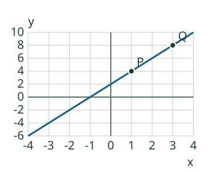
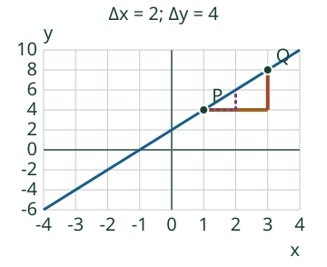
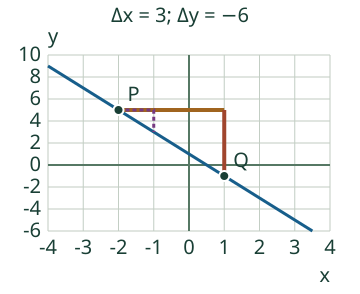

<link rel="stylesheet" href="lesson.css"/>
<section class="linear16" data-linear16>

<section data-teaching-step="1" data-lesson-role="teaching-step">
<p class="purpose">Selvitä, miten y muuttuu yhtä x-yksikköä kohti. <span>Loikka: Pelkkä korkeus ei kerro jyrkkyyttä.</span></p>
<button data-action="step" disabled>Seuraava havainnollinen vaihe</button>
<figure class="current" data-lesson-role="worked-example"><div data-view></div><figcaption data-readout>y = 2·x + 2. P (1; 4), Q (3; 8). Vertaa muutoksia, älä pelkkiä koordinaatteja.</figcaption></figure>
</section>


<section data-teaching-step="2" data-lesson-role="teaching-step">
<details data-tools data-lesson-role="teaching-step"><summary>Mallit ja toiston ohjaus (valinnainen)</summary>
<label>Malli<select data-model disabled><option value="offset">Muutos kahden pisteen välillä</option><option value="negative">Negatiivinen muutos</option><option value="zero">Vaakasuora: muutos nolla</option><option value="half">Murtolukukulmakerroin</option><option value="reverse">Pisteet toisin päin</option><option value="steep">Laskeva mutta jyrkempi</option><option value="gentle">Loivempi nouseva</option><option value="vertical">Vertailu: pystysuora, ei funktio</option><option value="transfer">Paikan muutos sekuntia kohti</option></select></label>
<div class="buttons"><button data-action="play" aria-pressed="false" disabled>Toista vaiheet</button><button data-action="pause" disabled>Pysäytä toisto</button><button data-action="restart" disabled>Alkuun</button><button data-action="end" disabled>Viimeinen vaihe</button></div><p data-running>Vaihetoisto pysäytetty.</p><div data-model-table></div></details>
<p class="jump"><a href="#linear16-practice">Vastaan suoraan harjoitukseen</a> · <a href="#linear16-examples">Katson selitykset</a></p>
</section>


<section id="linear16-examples" data-lesson-role="worked-example"><section data-teaching-step="3-1" data-lesson-role="worked-example"><h2>Kaksi esimerkkiä ja tärkeät erot</h2><h3>Esimerkki 1: siirtynyt nouseva suora</h3><p>P = (1; 4) ja Q = (3; 8). Δx = 3 − 1 = 2 ja Δy = 8 − 4 = 4. Siis k = 4/2 = 2. Suora on y = 2x + 2: pelkkä y/x olisi pisteessä P luku 4, joten se ei anna kulmakerrointa.</p><figure data-lesson-role="worked-example"></figure></section>
<section data-teaching-step="3-2" data-lesson-role="worked-example"><h3>Esimerkki 2: laskeva suora</h3><p>P = (−2; 5) ja Q = (1; −1). Δx = 1 − (−2) = 3 ja Δy = −1 − 5 = −6. Kulmakerroin on −6/3 = −2. Vaihtamalla molempien erotusten pistejärjestyksen saat 6/(−3) = −2. Älä vaihda vain toista erotusta.</p><figure data-lesson-role="worked-example"></figure></section>
<section data-teaching-step="3-3" data-lesson-role="worked-example"><h3>Nolla ja määrittelemätön ovat eri asioita</h3><p>Vaakasuoralla Δy = 0 ja Δx ≠ 0, joten k = 0. Pystysuoralla Δx = 0 ja eri pisteiden Δy ≠ 0: nollalla jakaminen ei ole määriteltyä. Pystysuora ei ole funktio y = kx + b eikä sen kulmakerroin ole tavallinen luku tai ääretön.</p></section>
<section data-teaching-step="3-4" data-lesson-role="worked-example"><h3>Virhekäsitys: korkeampi on jyrkempi</h3><p>Suoran siirtäminen ylöspäin muuttaa b:tä, ei k:ta. Samoilla akseliyksiköillä ja asteikoilla jyrkkyyttä verrataan luvulla |k|. Kulmakerroin −3 on jyrkempi kuin 2, vaikka −3 on lukuna pienempi. Eri asteikot tai eri yksiköt voivat muuttaa kuvaajan ulkonäköä.</p></section></section>


<section data-teaching-step="4" data-lesson-role="teaching-step">
<section id="linear16-practice" data-audience-columns><div data-visual-column><h2>Kokeile itse</h2>
<label>Tehtävä<select data-task disabled><option value="points">Lasken kahdesta pisteestä</option><option value="negative">Lasken negatiivisen kulmakertoimen</option><option value="zero">Tunnistan nollan</option><option value="half">Hyväksyn tarkan murtoluvun</option><option value="reverse">Vaihdan molempien erotusten järjestyksen</option><option value="table">Luen muutoksen taulukosta</option><option value="sign">Tulkitsen merkin</option><option value="steeper">Vertaan jyrkkyyttä samalla asteikolla</option><option value="rank">Järjestän kolme jyrkkyyttä</option><option value="vertical">Erotan pystysuoran</option><option value="transfer">Tulkitsen yksikön: m/s</option></select></label>
<p data-question>Suora kulkee pisteiden P (1; 4) ja Q (3; 8) kautta. Laske k.</p>
<div data-task-table></div>
<p data-candidate-legend></p>
<div data-practice-view></div></div><div data-response-column><p>Voit vastata suoraan. Mallin vaiheita ei tarvitse käydä läpi. Palaute koskee vain nykyistä tehtävää.</p>
<div data-fields><label>Kulmakerroin (luku tai ei määritelty)<input disabled data-answer="0" type="text" inputmode="text" maxlength="128" autocomplete="off" placeholder="Luku tai murtoluku"/></label></div>
<div data-adjustments class="buttons"><button data-action="adjust" data-delta="-1" disabled>Vähennä 1</button><button data-action="adjust" data-delta="1" disabled>Lisää 1</button></div>
<p class="small">Lisäys ja vähennys muuttavat ensimmäistä lukukenttää. Voit aina kirjoittaa suoraan.</p>
<button data-action="check" disabled>Tarkista nykyinen vastaus</button>
<p data-feedback data-result="neutral" role="status">Automaattinen tarkistus tarvitsee JavaScriptin. Esimerkit toimivat myös ilman sitä.</p>
<p data-preview-note>Oma vastaus ja annettu kuva erotetaan. Tarkistus tulee painikkeesta.</p>
<details data-lesson-role="hint"><summary>Tarvitsen vihjeen</summary><p data-task-help>Laske 8 − 4 ja 3 − 1 samassa pistejärjestyksessä.</p></details></div></section>
</section>


<section data-teaching-step="5" data-lesson-role="teaching-step">
<section><h2>Pysähdy ajattelemaan</h2><p>Jos vaihdat molempien erotusten pistejärjestyksen, muuttuuko kulmakerroin? Miksi?</p><details data-lesson-role="answer"><summary>Yksi perustelu</summary><p>Molemmat erotukset vaihtavat etumerkkiä, joten niiden osamäärä säilyy. Vaihda järjestys kummassakin tai älä kummassakaan.</p></details></section>
</section>


<section data-teaching-step="6" data-lesson-role="teaching-step">
<section><h2>Sovellan toiseen tilanteeseen</h2><p>Aika x mitataan sekunteina ja paikka y metreinä. Pisteistä (1 s; 5 m) ja (4 s; 11 m) saadaan (11 − 5) m / (4 − 1) s = 2 m/s. Paikan alkuarvo 3 m ei lisää nopeutta. Malli kattaa vain 0…4 s; se ei esitä kiihtyvää liikettä. Valitse siirtotehtävä ja laske suhde.</p></section>
</section>


<section data-teaching-step="7" data-lesson-role="teaching-step">
<details data-lesson-role="teaching-step"><summary>Lisähaaste</summary><p>Järjestä kolme suoraa jyrkimmästä loivimpaan käyttäen |k|:ta, älä niiden korkeutta. Murtoluku 1/2 ja desimaali 0,5 kuvaavat samaa suhdetta. Määrittelemätöntä pystysuoraa ei sijoiteta tähän lukujärjestykseen. Kahdesta täysin samasta pisteestä ei voi määrittää yksikäsitteistä suoraa.</p></details>
</section>

<details id="linear16-teacher" data-lesson-role="teacher-note"><summary>Opettajalle, tuen rajat ja käyttö ilman verkkoa</summary><p>Vuosiluokat 7–9. Tämä on atominen osaamiskohde. Ydinesitieto: suoran piirtäminen (M79-LINE-GRAPH). Suhteellisen muutoksen perusidea tukee, mutta siitä ei tehdä uutta aloitusehtoa. Ohjaus ja mallikatselu ovat valinnaisia. Hyväksy oppijan muu oikea päättely tai piirros; valintatehtävä ei yksin osoita piirtämistä.</p><p>Toisto vaihtaa täsmällisiä matemaattisia vaihekuvia. Se ei mittaa fyysistä liikettä. Akselit ja yksiköt ovat kuvassa; kuvan rajaus ei katkaise suoran matemaattista jatkumista abstraktissa tapauksessa. Vesimäärän/paikan siirtomalleissa käytetään vain ilmoitettua aikaväliä.</p><p>Tekninen tuki: malliasteikot −20…20, enintään 10 väliä akselia kohti, mallin k välillä −6…6 ja b välillä −10…10, nimetyt valmiit mallit. Mallikoordinaattien supistetut nimittäjät enintään 12. Suurempi vastausparserin tarkkuus ei laajenna mallivalikoimaa. Syötä luku, pilkulla tai pisteellä kirjoitettu desimaali tai murtoluku (esim. −3/2). Merkitsevä desimaaliosa enintään 12 paikkaa ja kokonaisosa/murtoluvun osat enintään 24 numeroa, raakasyöte enintään 128 merkkiä. Johtavat ja loppunollat eivät muuta arvoa. Ei pyöristystä; tuen ylittävä esitys pyydetään vaihtamaan tarkaksi murtoluvuksi. Piirtotehtävissä pisteiden on mahduttava annettuun x-väliin ja y-asteikkoon. Väärän ehdotuksen liian jyrkkää suoraa ei piirretä, mutta pisteet näytetään ja vastauksen totuus tarkistetaan erikseen.</p><p>Ilman JavaScriptiä alkukuva ja selitetyt esimerkit säilyvät; automaattinen tarkistus ja vaihetoisto ovat pois käytöstä. Kun tiedostot on toimitettu paikallisesti, harjoitus toimii ilman verkkoa. Poistuminen ei tallenna vastauksia.</p><p>Harjoitus tarkistaa vain tämän sivun vastauksia, ei itsenäisyyttä, säilymistä tai yleistä osaamista. Ei henkilökohtaista historiaa eikä tallennusta. Verkkopalvelua, tunnusta tai tekoälyä ei käytetä vastauksen tarkistamiseen.</p></details>

<section data-teaching-step="8" data-lesson-role="teaching-step">
<section><h2>Lopuksi</h2><p>Valitse kaksi pistettä samalta suoralta ja selitä omin sanoin, mitä Δy/Δx kertoo. Muista yksiköt. Voit lopettaa tähän tai jatkaa sivun navigaatiosta.</p></section>
</section>

</section>
